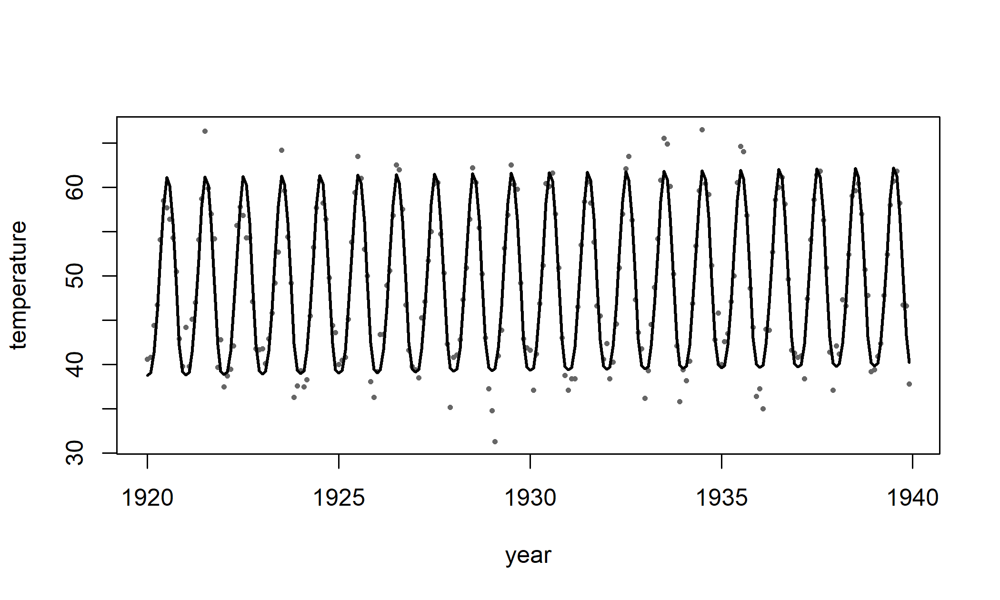
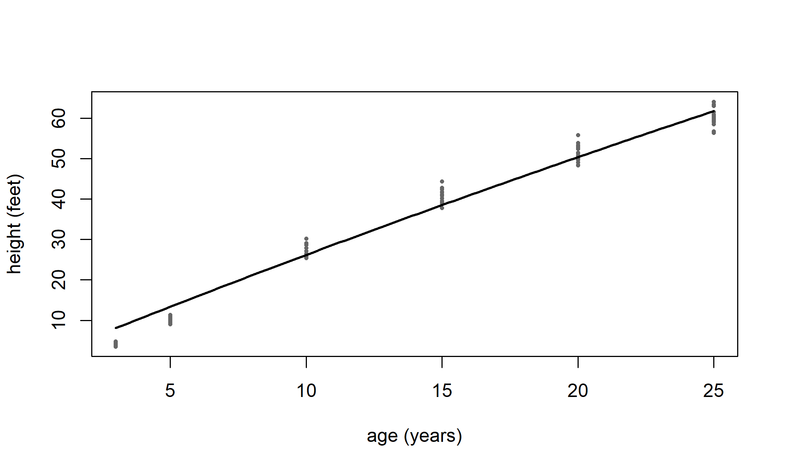
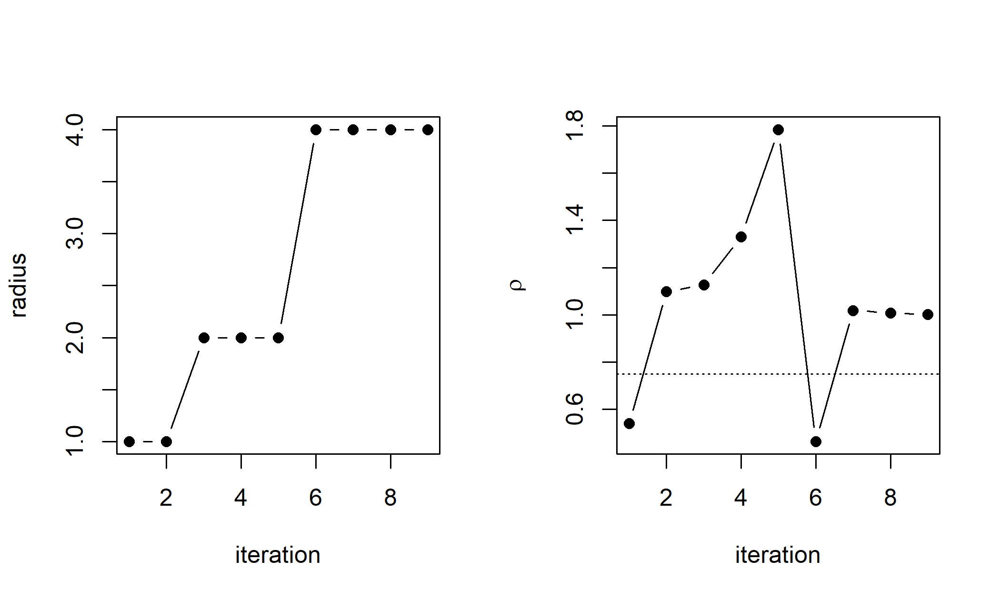

SeasonTerm <- S7::new_class("SeasonTerm", parent = additive_term,
properties = list(expr = S7::class_any,
spec = S7::class_list))
season <- function(x, period, k = 3) {
xe <- substitute(x)
SeasonTerm(label = sprintf("season(%s)", deparse(xe)), expr = xe,
spec = list(period = period, k = k), hyper = list(), X = NULL,
coef_names = character(0), blueprint = list(), penalty = NULL)
}
season_X <- function(x, period, k) {
w <- outer(2 * pi * x / period, seq_len(k))
X <- cbind(cos(w), sin(w))
colnames(X) <- c(paste0("cos", seq_len(k)), paste0("sin", seq_len(k)))
X
}
S7::method(term_build, SeasonTerm) <- function(term, data, ...) {
x <- as.numeric(eval(term@expr, data, baseenv()))
sp <- term@spec
X <- season_X(x, sp$period, sp$k)
S7::set_props(term, X = X, coef_names = colnames(X), blueprint = sp,
penalty = penalties7::quadratic_penalty(
diag(rep(seq_len(sp$k)^4, 2))))
}
S7::method(term_predict, SeasonTerm) <- function(term, newdata, ...) {
x <- as.numeric(eval(term@expr, newdata, baseenv()))
season_X(x, term@blueprint$period, term@blueprint$k)
}16 Writing a model term
Chapter 14 showed how statmod() uses the terms of modelterms7: a linear term, a smooth, a random effect, a break-point and a few others, each written in the formula and each contributing a block of the design. A term that the package does not provide is written by the user as an S7 object of the same kind, and the formula then accepts it. This chapter writes two. The first is a seasonal term with a fixed block, which uses one of the penalties of penalties7. The second is an asymptotic growth term whose block moves with its own coefficients, which is the case the package handles through a refresh step at each iteration.
16.1 The structure of a model term
A term of the additive branch is an S7 class that inherits from additive_term. The class adds four properties to the common ones of every term: the design block X, the names of its coefficients coef_names, a list blueprint that keeps what is needed to rebuild the block at new data, and the penalty penalty, which is NULL for an unpenalized term. The label, the hyperparameters and the variables of the formula are common to all terms.
Four methods make the term work in a fit. term_build() receives the term and the data, evaluates the variables and returns the term with X, coef_names, blueprint and penalty filled in. term_predict() receives the term and new data and returns the block at those data; predict() and the residuals use it. A term whose block does not depend on the coefficients needs nothing more. A term whose block does depend on them also has term_refresh(), which receives the term and a vector of coefficients and returns the term with the block recomputed at those values, term_value(), which returns the fitted contribution to the predictor, and term_coef_start(), which gives starting values for the coefficients. Section Section 16.3 shows these three.
The function check_term() runs the methods on a data frame and reports six checks. It builds the block, names its columns, counts its parameters, checks the penalty when there is one, reproduces the block at the training data, and gives the matching rows of the block for a subset of the data. A check that fails names the method at fault, so a term that passes is one that statmod() can fit.
16.2 A fixed block: a seasonal term
A seasonal cycle of period \(P\) is a sum of harmonics. With \(\omega = 2\pi/P\) and \(k\) harmonics, the block has the columns \(\cos(j\omega t)\) and \(\sin(j\omega t)\) for \(j = 1, \ldots, k\). We write a term season(x, period, k) whose block is this matrix, with the column \(x\) taken as the time within the period.
The penalty is the quadratic penalty with the diagonal matrix whose entries are \(j^4\), each repeated for the cosine and the sine of harmonic \(j\). The reason lies in the derivative of the harmonic. The second derivative of \(a\cos(j\omega t) + b\sin(j\omega t)\) has amplitude \(j^2\omega^2\), so the integral of its square over one period is \[
\int_0^P f''(t)^2\,dt = \frac{P}{2}\,\omega^4 \sum_{j=1}^{k} j^4\,(a_j^2 + b_j^2).
\] The penalty \(\lambda\,\beta^\top\!\mathrm{diag}(j^4)\,\beta\) is therefore a roughness penalty on the integrated squared second derivative, which is the penalty of the Fourier smoother fourier_smooth(order = 2) in basis7. The constant \(\omega^4\) is absorbed by the smoothing parameter.
We check the term on the monthly temperature of Nottingham, a series of 240 observations from 1920 to 1939 that comes with R.
nt <- data.frame(temp = as.numeric(nottem), time = as.numeric(time(nottem)))
nt$month <- (seq_len(nrow(nt)) - 1) %% 12 + 1
chk_season <- check_term(season(month, period = 12, k = 4), nt, verbose = FALSE)
chk_season
#> check status info
#> 1 build OK 240 x 8 block
#> 2 names OK
#> 3 npar OK
#> 4 smooth OK smooth
#> 5 reproduce OK
#> 6 subset OK 120 rowsEvery check passes. The model has a linear trend in time and the seasonal term for the mean, with four harmonics and the penalty above:
f_season <- statmod(temp ~ time + season(month, period = 12, k = 4),
distrib = gaussian1_distrib(), data = nt)
summary(f_season)
#> A statmod fit
#>
#> Call: statmod(formula = temp ~ time + season(month, period = 12, k = 4),
#> distrib = gaussian1_distrib(), data = nt)
#>
#> Distribution: gaussian1 Observations: 240
#>
#> === mu [identity link]
#>
#> Parametric terms
#> estimate se z p lower upper
#> (Intercept) -60.32 49.44 -1.22 0.22249 -157.2 36.59
#> time 0.05666 0.02562 2.212 0.02698 0.006451 0.1069
#>
#> season(month, period = 12, k = 4) [8 coefficients, edf 7.13]
#> estimate se z p lower upper
#> lambda [reml] 0.03695 0.01937 0.01323 0.1033
#> cos1 -9.231 0.2088 -44.21 < 1e-16 -9.64 -8.822
#> cos2 -0.0834 0.2063 -0.4043 0.6860 -0.4878 0.321
#> cos3 -0.06093 0.1965 -0.31 0.7565 -0.4461 0.3242
#> cos4 0.01199 0.1758 0.06822 0.9456 -0.3325 0.3565
#> sin1 -6.912 0.2089 -33.08 < 1e-16 -7.322 -6.503
#> sin2 1.468 0.2063 7.117 1.102e-12 1.064 1.873
#> sin3 0.3078 0.1965 1.566 0.1172 -0.07733 0.693
#> sin4 0.2604 0.1758 1.481 0.1386 -0.08416 0.6049
#>
#> === sigma [log link]
#>
#> Parametric terms
#> estimate se z p lower upper
#> (Intercept) 0.8281 0.04652 17.8 < 1e-16 0.7369 0.9193
#>
#> 95% intervals, bayesian variance
#> conditional log-likelihood -534.716152 effective df 10.13
#> cAIC 1089.694 cBIC 1124.955
#> fitted in 1.42 s
#> inner max |grad|/se 3.2e-05 min eigen 4.5e-06
#> outer max |grad|/se 8.1e-07 min eigen 1
#> 1 note: print(summary(fit), notes = TRUE)The same model written with the smoother of basis7 reaches the same solution. The smoother is fourier_smooth() with nine basis functions, which are the constant and the four harmonics, and with the second-derivative penalty on the interval of one period:
f_season_b <- statmod(temp ~ time + s(month, smoother = basis7::fourier_smooth(
k = 9, order = 2, lower = 0, upper = 12)),
distrib = gaussian1_distrib(), data = nt)
c(season = as.numeric(logLik(f_season)), basis7 = as.numeric(logLik(f_season_b)),
max_fitted_difference = max(abs(fitted(f_season) - fitted(f_season_b))))
#> season basis7 max_fitted_difference
#> -5.347162e+02 -5.347162e+02 5.484069e-06The two fits have the same effective degrees of freedom and the same criterion. Their fitted values differ by less than \(10^{-5}\) in the units of the series, which is the agreement one expects from two routes to the same penalized problem that differ in how the basis is built.
The term works in the equation of the scale as well. A seasonal change of the spread of the temperature is one more equation of the same kind:
f_season_sd <- statmod(temp ~ time + season(month, period = 12, k = 4) |
sigma ~ season(month, period = 12, k = 2),
distrib = gaussian1_distrib(), data = nt)
c(logLik = as.numeric(logLik(f_season_sd)),
state = statmod_certificate(f_season_sd)$state)
#> logLik state
#> "-532.44352059268" "converged"The fitted values follow the series closely:
plot(nt$time, nt$temp, pch = 16, cex = 0.5, col = "grey40",
xlab = "year", ylab = "temperature")
lines(nt$time, fitted(f_season), lwd = 2)
16.3 A moving block: an asymptotic growth term
The asymptotic curve \(f(x) = \mathrm{Asym}\,\{1 - \exp(-e^{\mathrm{lrc}}\,x)\}\) has two coefficients, the asymptote and the log of the rate. Its block is the Jacobian of \(f\) with respect to them: the column of \(\mathrm{Asym}\) is \(1 - e^{-e^{\mathrm{lrc}}x}\), and the column of \(\mathrm{lrc}\) is \(\mathrm{Asym}\,x\,e^{\mathrm{lrc}}e^{-e^{\mathrm{lrc}}x}\). The block depends on the coefficients, so it has to be recomputed whenever they move. The term keeps the coefficients in its blueprint, and term_refresh() puts the new values in and rebuilds the block.
AsymTerm <- S7::new_class("AsymTerm", parent = additive_term,
properties = list(expr = S7::class_any,
start = S7::class_numeric))
asym <- function(x, start = c(Asym = 60, lrc = -2)) {
xe <- substitute(x)
AsymTerm(label = sprintf("asym(%s)", deparse(xe)), expr = xe, start = start,
hyper = list(), X = NULL, coef_names = character(0),
blueprint = list(), penalty = NULL)
}
asym_parts <- function(x, cf) {
r <- exp(cf[2]); e <- exp(-r * x)
list(value = cf[1] * (1 - e),
J = cbind(Asym = 1 - e, lrc = cf[1] * x * r * e))
}
S7::method(term_build, AsymTerm) <- function(term, data, ...) {
x <- as.numeric(eval(term@expr, data, baseenv()))
cf <- as.numeric(term@start)
S7::set_props(term, X = asym_parts(x, cf)$J, coef_names = c("Asym", "lrc"),
blueprint = list(x = x, coef = cf), penalty = NULL)
}
S7::method(term_refresh, AsymTerm) <- function(term, coef, ...) {
bp <- term@blueprint
bp$coef <- as.numeric(coef)
S7::set_props(term, X = asym_parts(bp$x, bp$coef)$J, blueprint = bp)
}
S7::method(term_value, AsymTerm) <- function(term, coef = NULL, newdata = NULL, ...) {
bp <- term@blueprint
cf <- if (is.null(coef)) bp$coef else as.numeric(coef)
x <- if (is.null(newdata)) bp$x else as.numeric(eval(term@expr, newdata, baseenv()))
asym_parts(x, cf)$value
}
S7::method(term_coef_start, AsymTerm) <- function(term, target = NULL, ...) {
term@blueprint$coef
}
S7::method(term_predict, AsymTerm) <- function(term, newdata, ...) {
asym_parts(as.numeric(eval(term@expr, newdata, baseenv())),
term@blueprint$coef)$J
}The data are the Loblolly pines of the datasets package: height in feet of fourteen trees, measured at several ages, the trees being distinguished by the factor Seed. We check the term and then fit the curve to the pooled data.
lob <- as.data.frame(Loblolly)
chk_asym <- check_term(asym(age), lob, verbose = FALSE)
chk_asym
#> check status info
#> 1 build OK 84 x 2 block
#> 2 names OK
#> 3 npar OK
#> 4 smooth OK smooth
#> 5 reproduce OK
#> 6 subset OK 78 rowsf_asym <- statmod(height ~ 0 + asym(age), distrib = gaussian1_distrib(),
data = lob)
summary(f_asym)
#> A statmod fit
#>
#> Call: statmod(formula = height ~ 0 + asym(age), distrib = gaussian1_distrib(),
#> data = lob)
#>
#> Distribution: gaussian1 Observations: 84
#>
#> === mu [identity link]
#>
#> Parametric terms
#> estimate se z p lower upper
#> Asym 344.3 128.3 2.683 0.007299 92.79 595.9
#> lrc -4.84 0.4039 -11.98 < 1e-16 -5.631 -4.048
#>
#> === sigma [log link]
#>
#> Parametric terms
#> estimate se z p lower upper
#> (Intercept) 1.067 0.07809 13.67 < 1e-16 0.9142 1.22
#>
#> 95% intervals, bayesian variance
#> conditional log-likelihood -207.839380 effective df 3.00
#> cAIC 421.679 cBIC 428.971
#> fitted in 250 ms
#> inner max |grad|/se 1.8e-08 min eigen 0.00025
#> outer max |grad|/se 2.9e-05 min eigen 1
n_asym <- nls(height ~ Asym * (1 - exp(-exp(lrc) * age)), data = lob,
start = list(Asym = 60, lrc = -2))
rbind(statmod = coef(f_asym)$mu, nls = coef(n_asym))
#> Asym lrc
#> statmod 344.3455 -4.839654
#> nls 344.3468 -4.839659The estimates agree with nls() to a relative difference of \(3.9 \times 10^{-6}\). The two log-likelihoods differ by a constant. The fit of statmod() is the restricted likelihood, and the difference from the likelihood of nls() is its dispersion term, which for \(n = 84\) observations and \(p = 2\) coefficients is \(42\log(84/82) - 1 = 0.0121\). The difference between the two fits is -0.0121. The same curve written with the package’s nonlinear term nl() gives the same log-likelihood, which is a check that the refresh of the block is right:
f_asym_nl <- statmod(height ~ 0 + nl(~ Asym * (1 - exp(-exp(lrc) * age)),
start = list(Asym = 60, lrc = -2)),
distrib = gaussian1_distrib(), data = lob)
c(asym = as.numeric(logLik(f_asym)), nl = as.numeric(logLik(f_asym_nl)))
#> asym nl
#> -207.8394 -207.8394The term takes part in the other equations as any term does. The spread of the height can grow with the age, and a random intercept for each tree accounts for the repeated measures:
f_asym_sd <- statmod(height ~ 0 + asym(age) | sigma ~ age,
distrib = gaussian1_distrib(), data = lob)
f_asym_re <- statmod(height ~ 0 + asym(age) + random(~ 1 | Seed),
distrib = gaussian1_distrib(), data = lob)
data.frame(model = c("sigma ~ age", "random(~ 1 | Seed)"),
logLik = c(as.numeric(logLik(f_asym_sd)),
as.numeric(logLik(f_asym_re))),
state = c(statmod_certificate(f_asym_sd)$state,
statmod_certificate(f_asym_re)$state))
#> model logLik state
#> 1 sigma ~ age -205.3795 converged
#> 2 random(~ 1 | Seed) -114.8977 convergedThe predicted curve, with its standard errors, comes from the same term:
pa <- predict(f_asym, what = "mu",
newdata = data.frame(age = c(5, 15, 25)), se = TRUE)
pa
#> fit se lower upper
#> 1 13.35271 0.3300475 12.70583 13.99960
#> 2 38.52488 0.4369437 37.66849 39.38128
#> 3 61.78269 0.6868405 60.43651 63.12888plot(lob$age, lob$height, pch = 16, cex = 0.5, col = "grey40",
xlab = "age (years)", ylab = "height (feet)")
ag <- seq(min(lob$age), max(lob$age), length.out = 100)
lines(ag, predict(f_asym, what = "mu", newdata = data.frame(age = ag),
se = TRUE)$fit, lwd = 2)
16.4 The structure of an optimizer and its stopping rule
An optimizer of optimizers7 is an S7 object that inherits from optimizer. It holds a criterion, which is its stopping rule, a budget of iterations and of evaluations, and the settings for the trace. Its method minimize() receives the objective fn, the starting point par, the gradient gr and the Hessian he, and it returns an optimizer_result with the point, the value, the number of iterations, the counts of evaluations and whether the criterion was met. The method calls crit_met() after each accepted step, and the criterion decides what finished means. The optimizer also declares what it needs, through optimizer_provides(), and whether it can handle bounds, through optimizer_bounded(), so that check_optimizer() tests it against what it declares.
The criterion of the chapter is the relative gradient. The run stops when the largest component of the gradient is below the tolerance times \(\max(1, |f|)\):
CritRelGrad <- S7::new_class("CritRelGrad", parent = criterion,
properties = list(tol = S7::class_numeric))
crit_relgrad <- function(tol = 1e-8) {
CritRelGrad(label = sprintf("relative gradient < %g", tol), tol = tol)
}
S7::method(crit_met, CritRelGrad) <- function(criterion, state) {
!is.null(state$gradient) &&
max(abs(state$gradient)) < criterion@tol * max(1, abs(state$f_new))
}
S7::method(crit_needs, CritRelGrad) <- function(criterion) "gradient"The trust-region subproblem
The method is a Newton method with a trust region Conn, Gould, and Toint (2000). At the current point \(x\), with gradient \(g\) and Hessian \(H\), it replaces the objective by the quadratic model \(m(p) = g^\top p + \tfrac12 p^\top H p\) and takes the step \(p\) that minimizes \(m\) inside a ball of radius \(\Delta\): \[ \min_p\; m(p) \quad \text{subject to} \quad \|p\| \le \Delta . \] Write \(H = V\Lambda V^\top\) with \(\Lambda = \mathrm{diag}(\lambda_1, \ldots, \lambda_n)\), and let \(\tilde g = V^\top g\). The solution has the form \[ p(\mu) = -(H + \mu I)^{-1} g , \] for a multiplier \(\mu \ge \max(0, -\lambda_{\min})\) such that \(\|p(\mu)\| = \Delta\). If the Newton step \(-H^{-1}g\) already lies inside the ball, then \(\mu = 0\) and the step is the Newton step. The multiplier is the root of the secular equation \(\|p(\mu)\| = \Delta\), which the method finds with a bracketing root search in \(\mu\).
The case that needs care is the hard case. When \(\tilde g\) has no component along the eigenvector of \(\lambda_{\min}\) and \(\lambda_{\min} \le 0\), the norm \(\|p(\mu)\|\) does not reach \(\Delta\) as \(\mu\) falls to its lower bound. The step then takes \(p = p_\perp + \tau v_{\min}\), where \(p_\perp\) is the step on the other eigenvectors and \(\tau\) is chosen to reach the boundary. Between the two signs of \(\tau\) the method keeps the one with the smaller model.
The step is correct when it satisfies the first-order conditions of the problem. These are \[ (H + \mu I)\,p = -g, \qquad \mu \ge 0, \qquad \mu\,(\Delta - \|p\|) = 0, \qquad H + \mu I \succeq 0, \] and they are sufficient for \(p\) to be a global minimizer of \(m\) over the ball Conn, Gould, and Toint (2000). The gate of this chapter checks them on random problems.
tr_step <- function(g, H, Delta) {
e <- eigen(H, symmetric = TRUE)
lam <- e$values
V <- e$vectors
gt <- drop(crossprod(V, g))
lmin <- min(lam)
if (lmin > 0) {
p0 <- -gt / lam
if (sqrt(sum(p0^2)) <= Delta) {
p <- drop(V %*% p0)
attr(p, "mu") <- 0
return(p)
}
}
lo <- max(0, -lmin)
scale <- max(1, abs(lmin), sqrt(sum(gt^2)))
norm_mu <- function(mu) sqrt(sum((gt / (lam + mu))^2))
mu_lo <- lo + 1e-12 * scale
if (norm_mu(mu_lo) <= Delta) {
# hard case: the most negative eigenvector carries no gradient
i_min <- which.min(lam)
keep <- seq_along(lam)[-i_min]
p_perp <- -gt[keep] / (lam[keep] + lo)
tau <- sqrt(max(0, Delta^2 - sum(p_perp^2)))
cand <- lapply(c(1, -1), function(s) {
pc <- numeric(length(lam))
pc[keep] <- p_perp
pc[i_min] <- s * tau
pc
})
model <- vapply(cand, function(pc) {
sum(gt * pc) + 0.5 * sum(lam * pc^2)
}, numeric(1))
p <- drop(V %*% cand[[which.min(model)]])
attr(p, "mu") <- lo
return(p)
}
mu <- stats::uniroot(function(mu) norm_mu(mu) - Delta,
c(mu_lo, lo + sqrt(sum(g^2)) / Delta),
tol = 1e-14 * scale, extendInt = "no")$root
p <- drop(V %*% (-gt / (lam + mu)))
attr(p, "mu") <- mu
p
}The method and its radius
After the step, the method compares the decrease of the objective with the decrease the model predicts. The ratio is \[ \rho = \frac{f(x) - f(x + p)}{m(0) - m(p)} . \] The step is accepted when \(\rho > 0\). The radius follows the classical rules of Nocedal and Wright (2006): it is divided by four when \(\rho < 1/4\), and it is doubled, up to a maximum, when \(\rho > 3/4\) and the step reaches the boundary. A step that the model did not predict well therefore shortens the radius, and a step that the model predicted exactly lengthens it.
A second stop is needed. Near the minimum the predicted decrease falls below the rounding of the objective, so that \(f(x + p)\) and \(f(x)\) are equal in floating point, every step is rejected, and the radius falls to zero. When the predicted decrease is below \(10^3\,\varepsilon\,\max(1, |f|)\), the method stops and says so. Its criterion_met then names the resolution of the objective, and the result is not marked as converged.
TrustRegion <- S7::new_class("TrustRegion", parent = optimizer,
properties = list(radius = S7::class_numeric,
radius_max = S7::class_numeric))
trust_region <- function(criterion = crit_relgrad(1e-8), radius = 1,
radius_max = 1e4, maxit = 200, max_eval = 2000,
verbose = FALSE, refresh = 10, keep_trace = FALSE) {
TrustRegion(name = "trust-region Newton", criterion = criterion,
maxit = maxit, max_eval = max_eval, verbose = verbose,
refresh = refresh, keep_trace = keep_trace,
radius = radius, radius_max = radius_max)
}
S7::method(optimizer_provides, TrustRegion) <- function(optimizer) "gradient"
# No box: the radius is the only constraint, so the method answers FALSE and
# refuses finite bounds, as prox_grad() does.
S7::method(optimizer_bounded, TrustRegion) <- function(optimizer) FALSE
S7::method(minimize, TrustRegion) <- function(optimizer, fn, par, gr = NULL,
he = NULL, lower = -Inf,
upper = Inf, ...) {
if (is.null(gr) || is.null(he)) {
stop("trust_region() needs a gradient and a Hessian.", call. = FALSE)
}
if (any(is.finite(lower)) || any(is.finite(upper))) {
stop("trust_region() has no box; its radius is the only constraint.",
call. = FALSE)
}
check_criterion(optimizer)
o <- optimizer
x <- as.numeric(par)
f <- fn(x)
nf <- 1L
g <- gr(x)
H <- he(x)
ng <- 1L
nh <- 1L
Delta <- o@radius
conv <- FALSE
it <- 0L
reason <- "stopped without converging"
rows <- list()
if (crit_met(o@criterion, list(gradient = g, f_new = f))) conv <- TRUE
for (k in seq_len(if (conv) 0L else o@maxit)) {
it <- k
H <- (H + t(H)) / 2
p <- tr_step(g, H, Delta)
mu <- attr(p, "mu")
pn <- sqrt(sum(p^2))
pred <- -(sum(g * p) + 0.5 * sum(p * drop(H %*% p)))
xn <- x + p
fx <- fn(xn)
nf <- nf + 1L
rho <- if (is.finite(fx) && pred > 0) (f - fx) / pred else -Inf
accepted <- rho > 0
radius_in <- Delta
if (rho < 0.25) {
Delta <- Delta / 4
} else if (rho > 0.75 && pn >= 0.99 * Delta) {
Delta <- min(2 * Delta, o@radius_max)
}
if (o@keep_trace) {
rows[[it]] <- data.frame(iteration = it,
value = if (accepted) fx else f,
step = pn, radius = radius_in, rho = rho,
accepted = accepted, mu = mu)
}
if (accepted) {
g <- gr(xn)
ng <- ng + 1L
H <- he(xn)
nh <- nh + 1L
state <- list(iter = it, f_new = fx, f_old = f, x_new = xn,
x_old = x, gradient = g)
x <- xn
f <- fx
if (crit_met(o@criterion, state)) {
conv <- TRUE
reason <- o@criterion@label
break
}
}
if (isTRUE(pred <= 1e3 * .Machine$double.eps * max(1, abs(f)))) {
reason <- "resolution of the objective reached"
break
}
if (nf >= o@max_eval || Delta < 1e-12) {
reason <- "budget or radius exhausted"
break
}
}
trace <- if (o@keep_trace && length(rows)) do.call(rbind, rows) else NULL
optimizer_result(par = x, value = f, gradient = g,
counts = c(f = nf, g = ng, h = nh), iterations = it,
converged = conv,
criterion_met = reason,
message = "", trace = trace, optimizer = o,
elapsed = NA_real_)
}The method has to pass the same battery as the optimizers of the package. The battery runs on the sphere, Rosenbrock and other test functions, and it checks the value, the counts, the trace and the rejection of a bad criterion.
chk_tr <- check_optimizer(trust_region(), verbose = FALSE)
chk_tr$checks
#> value agrees with par gradient agrees with par
#> TRUE TRUE
#> convergence is not assumed budgets are respected
#> TRUE TRUE
#> evaluations are counted trace is well formed
#> TRUE TRUE
#> bounds are respected strictly the run repeats
#> TRUE TRUE
#> maximize mirrors minimize an unevaluable rule is rejected
#> TRUE TRUE
#> a bad starting point is an error it minimizes a quadratic
#> TRUE TRUE16.5 Using the method in a fit
A gamma distribution fitted to the GAG concentrations of the MASS package (GAGurine) is the smallest test. We fit it with the Fisher scoring that fit_distrib() uses by default and with the trust-region method:
data(GAGurine, package = "MASS")
fd_default <- fit_distrib(gamma1_distrib(), GAGurine$GAG)
fd_tr <- fit_distrib(gamma1_distrib(), GAGurine$GAG,
method = trust_region())
c(default = fd_default@loglik, trust_region = fd_tr@loglik)
#> default trust_region
#> -1065.306 -1065.306Inside statmod() the method is an inner optimizer, which fits the coefficients for given hyperparameters. The fit of the acceleration of the motorcycle crash data (mcycle) has a smooth in the mean and in the scale, and it runs twenty-six inner fits. To count them, we keep the results of the runs with a wrapper that forwards every call to the optimizer it holds:
RunLog <- S7::new_class("RunLog", parent = optimizer,
properties = list(inner = S7::class_any,
log = S7::class_environment))
keep_runs <- function(o, log) {
RunLog(name = o@name, criterion = o@criterion, maxit = o@maxit,
max_eval = o@max_eval, verbose = o@verbose, refresh = o@refresh,
keep_trace = o@keep_trace, inner = o, log = log)
}
S7::method(optimizer_provides, RunLog) <- function(optimizer) {
optimizer_provides(optimizer@inner)
}
S7::method(optimizer_bounded, RunLog) <- function(optimizer) {
optimizer_bounded(optimizer@inner)
}
S7::method(minimize, RunLog) <- function(optimizer, fn, par, gr = NULL,
he = NULL, lower = -Inf,
upper = Inf, ...) {
r <- optimizers7::minimize(optimizer@inner, fn, par, gr = gr, he = he,
lower = lower, upper = upper, ...)
n <- length(optimizer@log$runs) + 1L
optimizer@log$runs[[n]] <- list(iterations = r@iterations,
counts = r@counts,
converged = r@converged,
value = r@value, trace = r@trace)
r
}
runs_summary <- function(log) {
rs <- log$runs
data.frame(runs = length(rs),
iterations = sum(vapply(rs, function(r) r$iterations, 0)),
not_converged = sum(!vapply(rs, function(r) r$converged, TRUE)))
}data(mcycle, package = "MASS")
inner_log <- new.env()
inner_log$runs <- list()
f_inner <- statmod(accel ~ s(times) | sigma ~ s(times),
distrib = gaussian1_distrib(), data = mcycle,
inner_optimizer = keep_runs(trust_region(), inner_log))
summary(f_inner)
#> A statmod fit
#>
#> Call: statmod(formula = accel ~ s(times) | sigma ~ s(times), distrib = gaussian1_distrib(),
#> data = mcycle, inner_optimizer = keep_runs(trust_region(),
#> inner_log))
#>
#> Distribution: gaussian1 Observations: 133
#>
#> === mu [identity link]
#>
#> Parametric terms
#> estimate se z p lower upper
#> (Intercept) -16.3 3.489 -4.672 2.98e-06 -23.14 -9.463
#>
#> s(times) [9 coefficients, edf 7.81]
#> estimate se z p lower upper
#> lambda [reml] 0.000353 0.0002477 8.921e-05 0.001397
#> lin 9.447 1.768 5.342 9.181e-08 5.981 12.91
#>
#> === sigma [log link]
#>
#> Parametric terms
#> estimate se z p lower upper
#> (Intercept) 2.993 0.06623 45.19 < 1e-16 2.863 3.123
#>
#> s(times) [9 coefficients, edf 6.23]
#> estimate se z p lower upper
#> lambda [reml] 0.2463 0.2024 0.04922 1.233
#> lin 0.3738 0.0749 4.991 6.019e-07 0.227 0.5206
#>
#> 95% intervals, bayesian variance
#> conditional log-likelihood -579.377190 effective df 16.04
#> cAIC 1190.825 cBIC 1237.173
#> fitted in 770 ms
#> inner max |grad|/se 1e-08 min eigen 0.0022
#> outer max |grad|/se 2.3e-08 min eigen 0.73
#> 1 note: print(summary(fit), notes = TRUE)
runs_summary(inner_log)
#> runs iterations not_converged
#> 1 26 148 0Every inner run meets the rule, and the log-likelihood is the one that the default method finds. The check in the gate compares the two.
16.6 The same method as an outer optimizer
The outer optimizer searches over the smoothing parameters, and each of its evaluations is a complete inner fit. We compare the trust-region method with newton() in two forms, one with the default unlimited step and one with the step limited to a norm of five, which is the max_length argument of newton():
outer_runs <- list(
trust_region = trust_region(criterion = crit_relgrad(1e-8), keep_trace = TRUE),
newton_unlimited = newton(criterion = crit_relgrad(1e-8)),
newton_limited = newton(criterion = crit_relgrad(1e-8), max_length = 5)
)
outer_fits <- list()
outer_logs <- list()
outer_time <- c()
for (nm in names(outer_runs)) {
lg <- new.env()
lg$runs <- list()
outer_logs[[nm]] <- lg
o <- keep_runs(outer_runs[[nm]], lg)
outer_time[nm] <- elapsed(outer_fits[[nm]] <- statmod(
accel ~ s(times) | sigma ~ s(times), distrib = gaussian1_distrib(),
data = mcycle, outer_optimizer = o))
}
outer_table <- data.frame(
method = names(outer_runs),
seconds = round(as.numeric(outer_time), 2),
iterations = vapply(outer_logs, function(lg) sum(vapply(lg$runs, function(r) r$iterations, 0)), 0),
log_likelihood = vapply(outer_fits, function(f) as.numeric(logLik(f)), 0),
row.names = NULL
)
outer_table
#> method seconds iterations log_likelihood
#> 1 trust_region 0.36 9 -579.3772
#> 2 newton_unlimited 0.45 13 -579.3772
#> 3 newton_limited 0.66 23 -579.3772The three methods reach the same hyperparameters and the same log-likelihood. The trust-region method takes 9 iterations against 13 for the unlimited Newton method and 23 for the limited one. The run times are of the same order, so the iteration count is the quantity that separates the methods here.
The trace of the trust region shows the radius and the ratio \(\rho\) at each iteration. The first step is cut by the initial radius, and the radius then grows as the model proves reliable:
tr_trace <- outer_logs$trust_region$runs[[length(outer_logs$trust_region$runs)]]$trace
par(mfrow = c(1, 2))
plot(tr_trace$iteration, tr_trace$radius, type = "b", pch = 16,
xlab = "iteration", ylab = "radius")
plot(tr_trace$iteration, tr_trace$rho, type = "b", pch = 16,
xlab = "iteration", ylab = expression(rho))
abline(h = c(0.25, 0.75), lty = 3)
par(mfrow = c(1, 1))
The starting radius of one is a constant that the reader chooses. The outer search gives the same hyperparameters with the other two starting radii as well, and the iteration counts show how little the choice matters:
r0_counts <- vapply(c(0.1, 1, 10), function(r0) {
lg <- new.env()
lg$runs <- list()
invisible(statmod(accel ~ s(times) | sigma ~ s(times),
distrib = gaussian1_distrib(), data = mcycle,
outer_optimizer = keep_runs(
trust_region(criterion = crit_relgrad(1e-8), radius = r0),
lg)))
sum(vapply(lg$runs, function(r) r$iterations, 0))
}, 0)
names(r0_counts) <- c("r0 = 0.1", "r0 = 1", "r0 = 10")
r0_counts
#> r0 = 0.1 r0 = 1 r0 = 10
#> 12 9 12